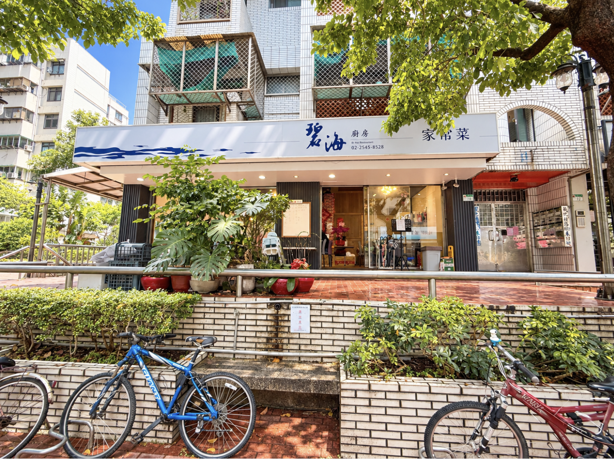

碧海廚房敦北店｜小巨蛋附近家常合菜：聚餐點菜與訂位提醒

一句話摘要
小巨蛋附近若想找適合家庭或朋友聚餐的家常合菜，碧海廚房敦北店可列入口袋名單。來源作者的此次體驗中，蒼蠅頭、京都排骨、水餃與老譚菜鮮魚鍋表現突出；平日午餐也可能客滿，建議先訂位。
來源與歷史脈絡
本條目依 Nash，神之領域於 2026 年 9 月 24 日發布的食記整理。作者稱店家傳承自「蔣經國時期招待所碧海山莊」的家常菜，並由原班人馬所創；此為食記所載的歷史說法，本次未取得第一手歷史資料獨立核實，故不將其視為已證實結論。
店家資訊
- 店名：碧海廚房 敦北店
- 地址：台北市松山區敦化北路 155 巷 10 號 1 樓
- 電話：02 2545 8528
- 來源列示營業時間：11:00–14:00、17:00–20:30
- 來源價格印象：多數菜色約 200 至 300 多元；實際菜單有不同品項與價格。
食記作者推薦與點菜參考
- 蒼蠅頭：來源作者列為招牌必點，形容韭菜脆香、鹹香下飯。
- 京都排骨：食記標價 350 元；作者認為甜味不過重，適合配白飯。
- 水餃：食記標價 100 元；作者特別推薦韭菜口味，評為多汁且味道平衡。
- 老譚菜鮮魚鍋：食記標價 780 元；作者形容湯頭酸、麻、辣層次明顯，份量也較大。
- 老皮嫩肉：食記標價 180 元；作者提到外搭的辣麻醬是特色。
來源作者也有列出較保留的單品感受：椒鹽魚片被認為土味明顯，蔥油餅則屬可點可不點。這些均為單次用餐的個人評價，不代表所有餐點或每次出餐品質。
實用建議
- 適合對象：家庭聚餐、朋友合菜、希望多點幾道配飯菜的人。
- 訂位：來源作者稱平日午餐也會客滿，建議先以電話確認座位。
- 點菜：人數較少時，先以 1 道肉、1 道豆腐／蛋、1 道蔬菜與水餃分食；多人再考慮鮮魚鍋等大份菜。
- 現場留意：來源提到門口白板可能有當日特殊菜色，可先查看再決定。
注意事項
- 地址、電話、營業時段、菜單、價格、公休與訂位規則都可能調整；出發前請直接向店家確認。
- 價格與菜色描述取自 2026 年 9 月 24 日的食記，不是店家保證或即時菜單。
- 如有過敏、素食、飲食限制或需要開立發票／刷卡等需求，點餐前先詢問店家。
原始連結
- Nash，神之領域：https://nash.tw/bi-haikkk/